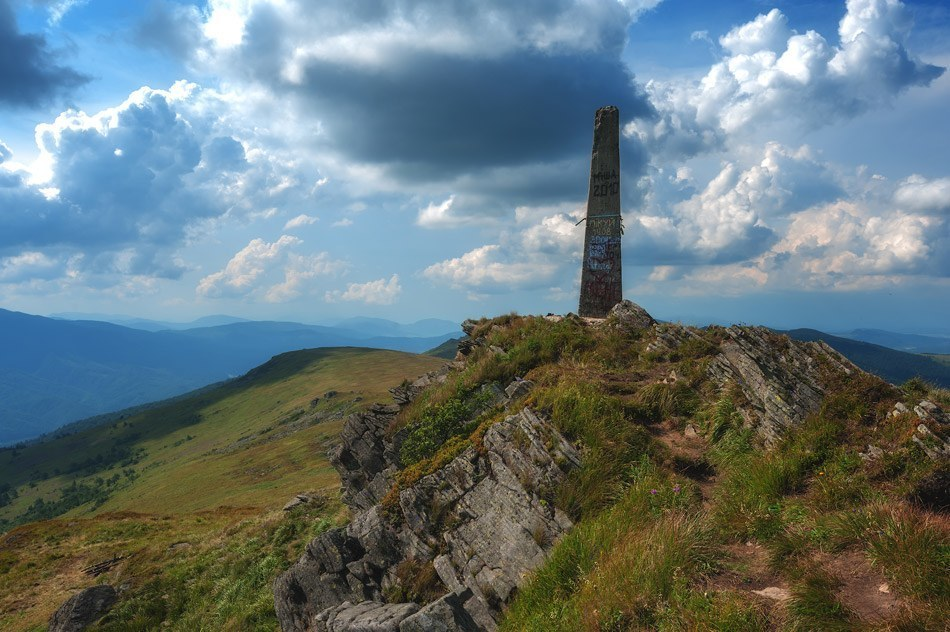
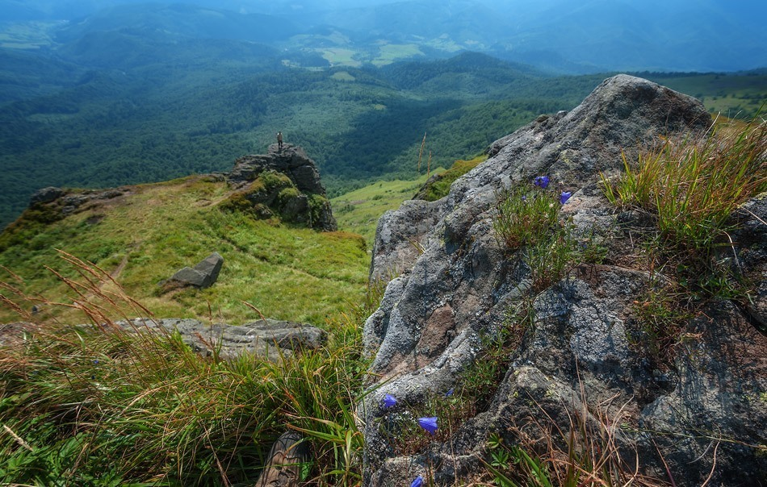

Пікуй — найвища гора Львівської області
Гора Пікуй — найвища точка Вододільного хребта, з якої відкриваються приголомшливі краєвиди. Почати сходження можна з різних карпатських селищ.
Вододільній хребет — гірська смуга, якою проходить головний карпатський вододіл, тобто тут беруть свій початок чисельні річки. На Хребті розташований виток Латориці, яка тече до самого Мукачева. Гора Пікуй — найвища вершина Вододільного хребта, вона виростає на межі двох областей: Львівської та Закарпатської. Висота гори — 1 408 м над рівнем моря. Схили густо поросли буками і ялівцем, а вершина нагадує формою асиметричний конус.
Пікуй — мальовничий куточок Карпат, що дозволяє побачити не тільки дикі ліси, але й альпійські луки. Краєвиди біля вершини вражають уяву: очам відкриваються таємничі урвища та грізні скелі. Оскільки це найвища географічна точка Львівської області, на туристів чекає приголомшливе розмаїття пейзажів. Неподалік від Пікую, на висоті 1 200 м над рівнем моря, розташований перевал “Руська Путь” — він має історичне значення, адже саме тут проходив торговий, а інколи й військовий шлях з Заходу на Схід. Також поблизу від вершини причаївся водоспад Воєводин — це не надто популярна серед туристів локація, адже дістатись до неї пішки буває нелегко. Тим цікавіше побачити водоспад на власні очі!
Перевал “Руська Путь” колись правив за межу між Польщею та Угорщиною, а сама гора Пікуй певний час була частиною держави Чехословаччини. Тому на її вершечку встановлено меморіал на честь президента Томаша Масарика.
Туристичні маршрути
Бажаєте вирушити до гори Пікуй? Це можна зробити по-різному. Можна зі Львова дістатися до станції “Сянка” і почати пішу подорож звідти. Можна доїхати до сіл Гусне, Кривка чи Біласовиця. Досвідчені мандрівники радять рушати до вершини з села Либохори — звідки вас можуть підвезти до перевалу “Руська Путь”. Відстань до перевалу нескладно подолати й самостійно, на своїх двох, вона невелика. Проте хочемо попередити: шлях стрімкий. А від перевалу до вершини веде добре втоптана століттями стежка — вам треба чимчикувати лише 8 км.
З селища Жденієво також можна прогулятись пішки на вершину гори — для місцевих жителів вона має трохи містичне значення. Легенду, яку тубільці пов’язують з горою Пікуй, ви можете прочитати тут. Хоча прогулянка вимагає в середньому 5 годин, шлях з села буде не надто легким. Ви маєте подолати 12 км з різницею висот, яка складає 982 м. Тобто стежки будуть вести вас круто вгору — це шлях для мандрівників з міцними ногами й легенями. Зі Жденієво треба вийти на асфальтовану дорогу, яке веде на полонини. По дорозі ви можете роздивитись ще одну вершину: Високий Камінь, завітати до ботанічного заказника Бузок. За орієнтир, який підкаже, що ви йдете вірною дорогою у світле майбутнє, вам може правити потік Кочилівський. Опинившись на вершині, ви побачите найбільшу карпатську полонину: Полонину Руну. Вершечок гори кам’янистий і вузький, на нього встановлено кам’яного тура.
Сходження на вершину можна почати і від села Біласовиця. Це вдвічі цікаво, оскільки Біласовиця — стародавнє бойківське село зі своїми традиціями. Тут роблять унікальну солодку бринзу, яку називають “їдким сиром”. Повторити рецепт у будь-якому іншому місці неможливо — секрет в молоці, яке дає місцева порода корів. У тварин дуже великі роги, з яких бойки здавна вирізбляють келихи. Варто купити у селян “їдкого сиру”, але їсти його “чистим” неможливо. Краще на привалі приготувати картоплі з бринзою — це буде дійсно смачно. З Біласовиці добре видно гору Пікуй, тому загубити шлях складно, а от піднявшись на вершечок, ви побачите з іншого боку Жденієво — можна не вертатись до Біласовиці, а спуститись до цього села, щоб там заночувати чи сісти на транспорт.